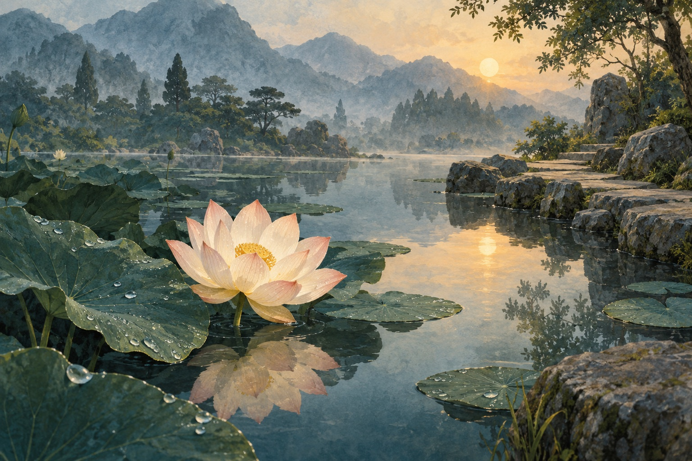

Perhatian yang cermat · Dhp 26
Harta yang perlu dijaga
Orang bijaksana menjaga kewaspadaan seperti menjaga harta berharga. Kelengahan dibandingkan dengan perlindungan yang disengaja ini.
Ringkasan editorial · Bukan terjemahan kitab suci
Apa harta dalam perbandingan tersebut?
Mari pahami
- Kewaspadaan
Perhatian dapat dijaga melalui pilihan kita. Bait ini mengutamakan hidup dengan penuh perhatian daripada penampilan.
Penjelasan editorial atas kutipan yang dirujuk
Pelajaran selesai
Sejenak merenung · Opsional
Singkirkan satu gangguan kecil dari tugas yang layak mendapat perhatianmu.
Ini untuk Anda sendiri. Jawaban tidak dicatat atau dinilai.
Pratinjau ini tidak menyimpan kemajuan atau memindahkannya ke aplikasi.
Aplikasi iPhone memerlukan langganan tahunan. Harga yang ditampilkan App Store untuk wilayah Anda berlaku. Tanpa masa percobaan gratis.
Baca kutipan sumber
Dhammapada • Dhp 26
Konteks kutipan
Dhammapada 26, kumpulan bait Pali awal yang dilestarikan dalam kanon Theravāda. Ini catatan belajar orisinal, bukan terjemahan kutipan Pali atau klaim mewakili seluruh tradisi Buddhis.
Ringkasan dan penjelasan adalah catatan belajar asli, bukan terjemahan kitab suci. Penafsiran dapat berbeda antartradisi.
Pali text: Mahāsaṅgīti Tipiṭaka Buddhavasse 2500, Dhamma Society; published by SuttaCentral. Original learning notes by Amitaba.
Public domain — Public Domain Mark 1.0. See bundled SOURCE-NOTICE.txt.
Situs sumber